Natal Pemuda & Pemudi GKPI Parsaoran Nauli
Selamat Natal 2026
Tema: Christ In Me, I Will Not Fear
19Des 2026
Sabtu, 19 Desember 2026
GKPI Parsaoran Nauli, Medan
Waktu ibadah menyusul
Natal Pemuda & Pemudi GKPI Parsaoran Nauli
Tema: Christ In Me, I Will Not Fear
Sabtu, 19 Desember 2026
GKPI Parsaoran Nauli, Medan
Waktu ibadah menyusul
PP (Pemuda/Pemudi) GKPI Parsaoran Nauli menaungi anak muda jemaat mulai dari usia remaja akhir hingga dewasa muda. Kami percaya masa muda adalah waktu terbaik untuk mengenal Kristus lebih dalam, mengasah talenta, dan melayani sesama bukan menunggu "nanti sudah tua".
Ibadah minggu, doa bersama, dan kebersamaan lintas naposo untuk saling menguatkan.
Diskusi Alkitab mingguan yang relevan dengan pergumulan anak muda masa kini.
Bakti sosial, kunjungan kasih, dan uluran tangan bagi jemaat serta warga sekitar.
Jangan seorang pun menganggapmu rendah karena engkau muda, jadilah teladan bagi orang percaya.
Kami percaya setiap anak muda punya tempat untuk bertumbuh, bertanya, dan berkarya tanpa perlu merasa "kurang rohani" atau "belum siap". PP GKPI Parsaoran Nauli hadir sebagai ruang aman untuk belajar firman, membangun persahabatan yang tulus, dan mengambil bagian dalam pelayanan sesuai talenta masing-masing. Kami menantikan kehadiranmu di ibadah minggu berikutnya.
Selain kegiatan rutin, PP GKPI Parsaoran Nauli turut mengambil bagian dalam perayaan dan pelayanan besar sepanjang tahun gerejawi.
Momen pelayanan dan persekutuan PP, dikelompokkan per kegiatan.
Persekutuan dan pendalaman Alkitab setiap minggu.
6 foto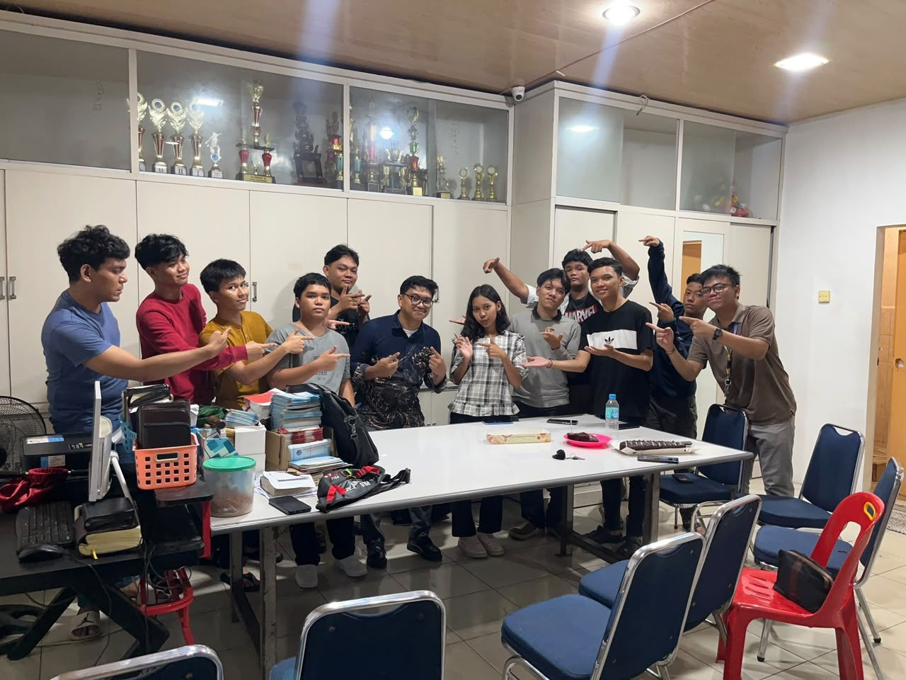
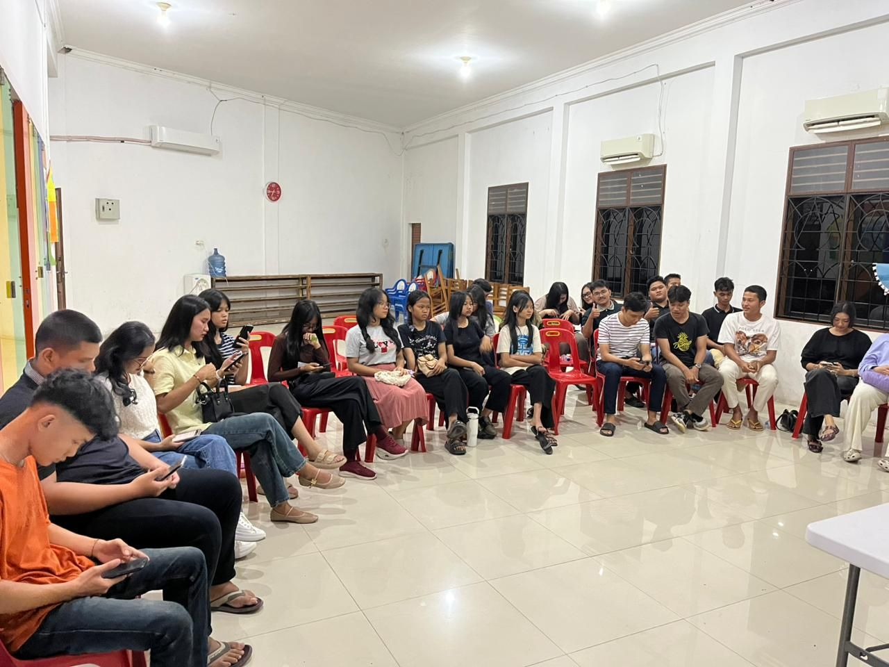
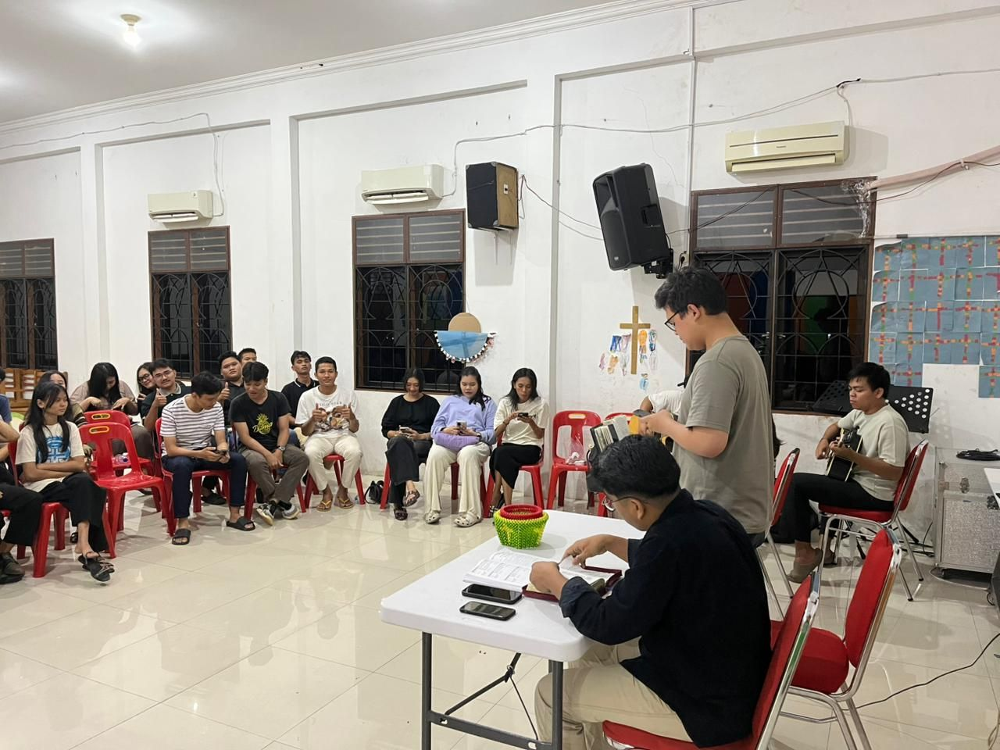
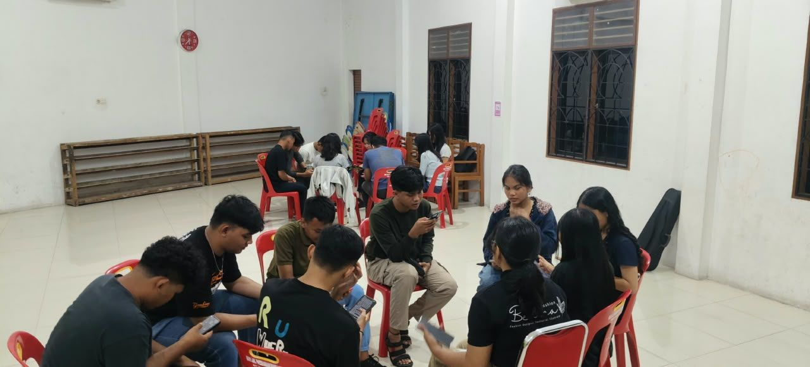
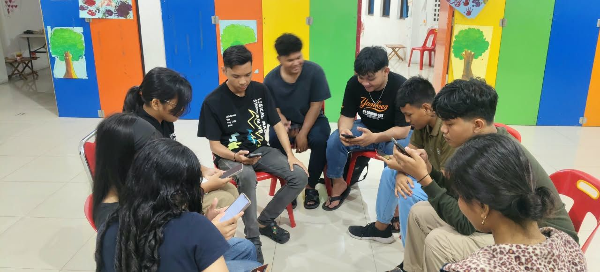
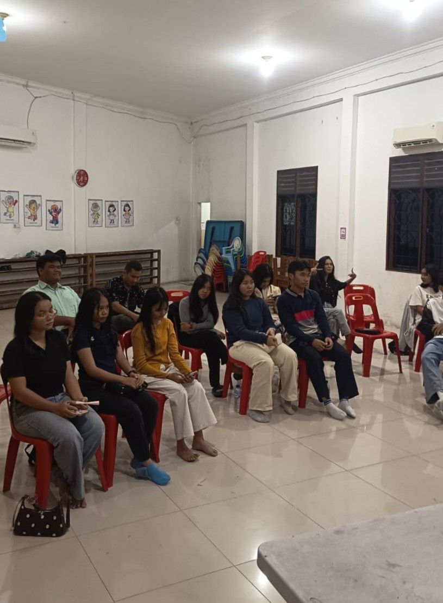
Pelayanan pujian PP dalam ibadah dan acara gereja.
9 foto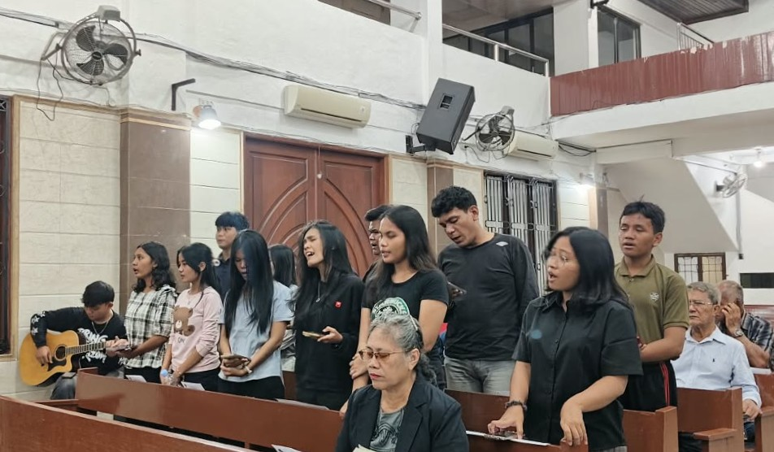
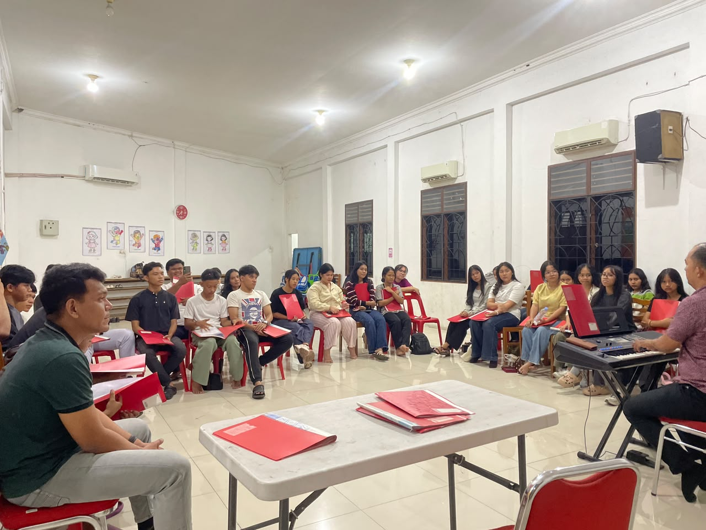
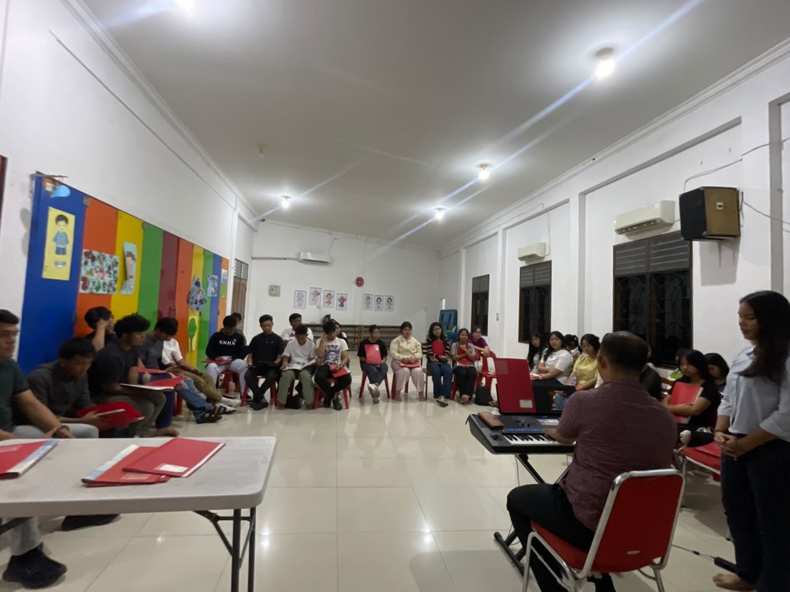
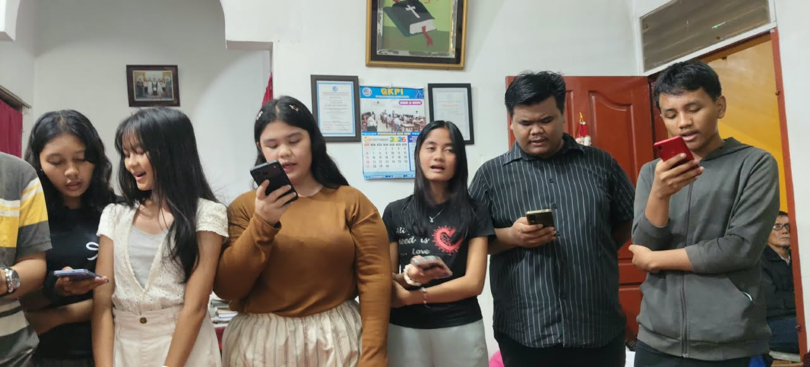
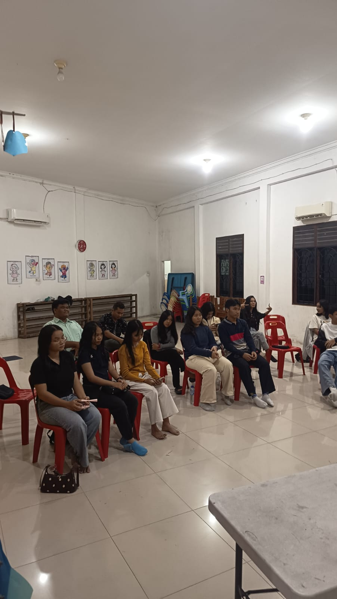
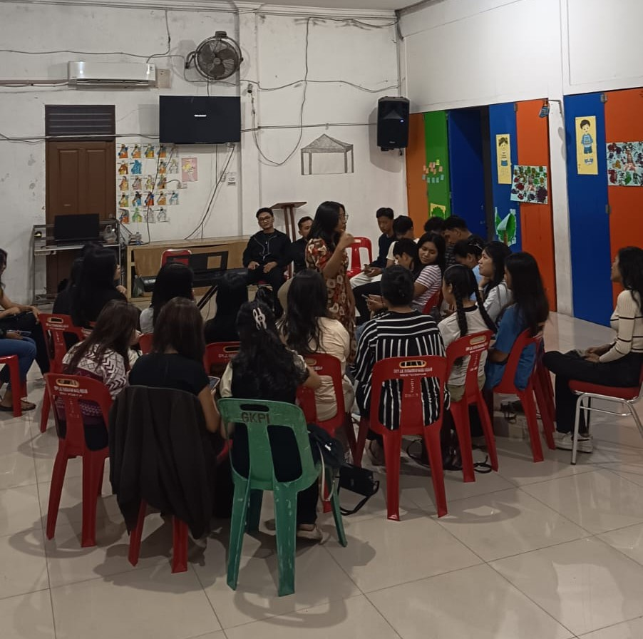
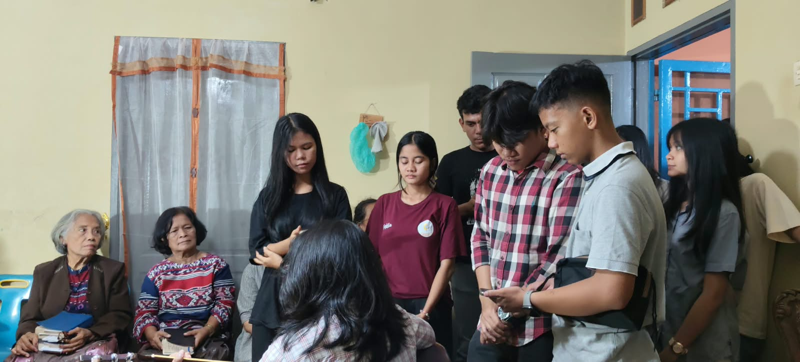
Perayaan Natal PP GKPI Parsaoran Nauli Tahun 2025
Memuat foto…
Retreat PP GKPI Parsaoran Nauli Tahun 2023
Memuat foto…
Lihat kegiatan kami lainnya di sini
Beberapa pertanyaan yang sering muncul dari teman-teman yang baru ingin bergabung dengan PP GKPI Parsaoran Nauli.
Semua pemuda dan pemudi jemaat GKPI Parsaoran Nauli — baik yang sudah lama aktif, baru pindah jemaat, maupun yang belum pernah ikut sama sekali. Tidak ada syarat khusus, cukup datang dengan hati terbuka.
Tentu boleh. Pemahaman Alkitab (PA) justru dirancang sebagai ruang belajar bersama — pertanyaan "sederhana" sangat disambut, dan diskusi berlangsung santai dalam kelompok kecil.
Hubungi koordinator terkait (pujian, PA, diakonia, atau humas) melalui WhatsApp pengurus di bagian kontak, atau langsung sampaikan minatmu saat ibadah minggu.
Tidak ada biaya keanggotaan. Untuk kegiatan tertentu seperti retreat, mungkin ada kontribusi sukarela yang akan diinformasikan jauh-jauh hari oleh pengurus.
Bisa. Beberapa kegiatan seperti PA diadakan bergilir di rumah anggota, dan komunikasi sehari-hari juga berlangsung lewat grup WhatsApp / Instagram PP.
Kamu pemuda/pemudi jemaat GKPI Parsaoran Nauli yang belum aktif? Kami dengan senang hati menyambutmu. Hubungi pengurus atau datang langsung pada jadwal ibadah minggu.